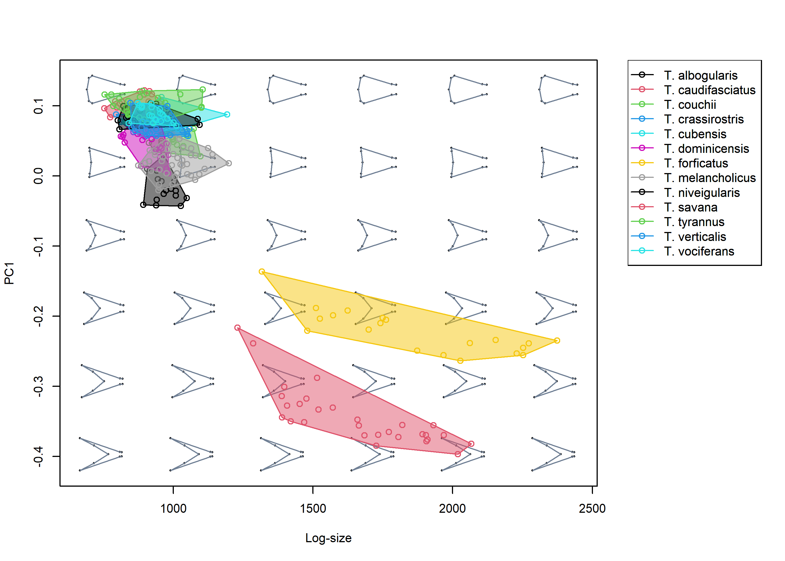
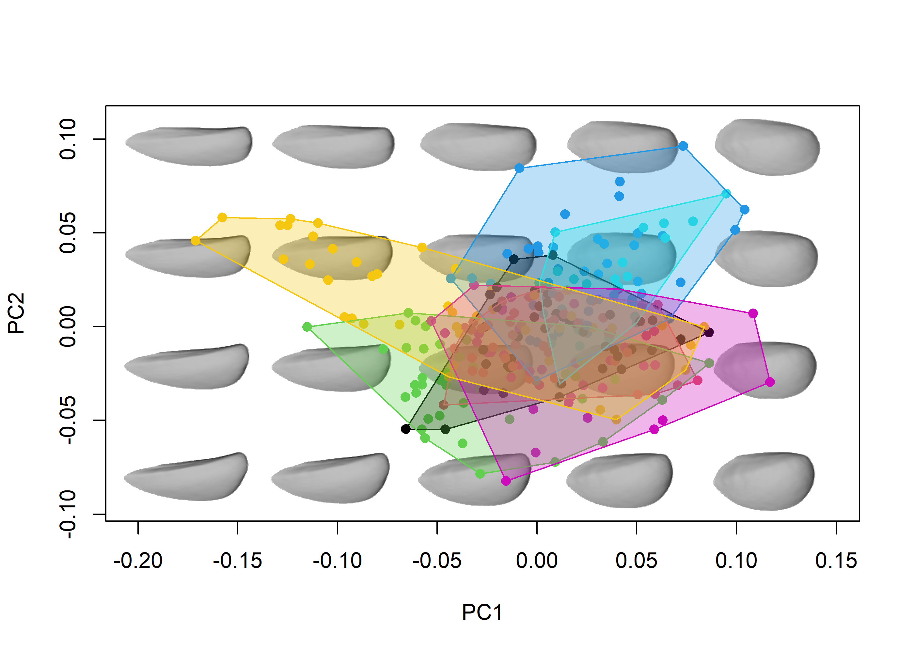

The goal of morphospace is to enhance representation and heuristic exploration of multivariate ordinations of shape data. This package can handle the most common types of shape data working in integration with other widely used R packages such as Morpho (Schlager 2017), geomorph (Adams et al. 2021), shapes (Dryden 2019), and Momocs (Bonhome et al. 2014), which cover other more essential steps in the geometric morphometrics pipeline (e.g. importation, normalization, statistical analysis).
Installation
You can install the development version of morphospace from GitHub with:
# install.packages("devtools")
devtools::install_github("millacarmona/morphospace")Concept
The basic idea behind morphospace is to build empirical morphospaces using multivariate ordination methods, then use the resulting ordination as a reference frame in which elements representing different aspects of morphometric variation are projected. These elements are added to both graphic representations and objects as consecutive ‘layers’ and list slots, respectively, using the %>% pipe operator from magrittr (Bache & Wickham 2022).
The starting point of the morphospace workflow is a set of shapes (i.e. morphometric data that is already free of variation due to differences in orientation, position and scale). These are fed to the mspace function, which generates a morphospace using a variety of multivariate methods related to Principal Component Analysis. This general workflow is broadly outlined below using the tails data set from Fasanelli et al. (2022), which contains tail shapes from 281 specimens belonging to 13 species of the genus Tyrannus.
library(morphospace)
library(geomorph)
library(Morpho)
library(Momocs)
library(magrittr)
library(rgl)
# Load tail data
data("tails")
shapes <- tails$shapes
spp <- tails$data$species
wf <- tails$links
phy <- tails$tree
# Generate morphospace
mspace(shapes, links = wf, cex.ldm = 5)The ordination produced by mspace is used as a reference frame in which scatter points, convex hulls / confidence ellipses, a phylogeny, a set of morphometric axes or a landscape surface can be projected using the proj_* functions:
# Get mean shapes of each species
spp_shapes <- expected_shapes(shapes = tails$shapes, x = tails$data$species)
# Generate morphospace and project:
msp <- mspace(shapes = shapes, links = wf, cex.ldm = 5) %>%
# scatter points
proj_shapes(shapes = shapes, col = spp) %>%
# convex hulls enclosing groups
proj_groups(shapes = shapes, groups = spp, alpha = 0.5) %>%
# phylogenetic relationships
proj_phylogeny(shapes = spp_shapes, tree = phy, lwd = 1.5,
col.tips = match(phy$tip.label, levels(spp)))
Once the "mspace" object has been created, the plot_mspace function can be used to either regenerate/modify the plot, add a legend, or to combine morphometric axes with other non-shape variables to produce ‘hybrid’ morphospaces. For example, PC1 can be plotted against size to explore allometric patterns.
# Plot PC1 against log-size, add legend
plot_mspace(msp, x = tails$sizes, axes = 1, nh = 6, nv = 6, cex.ldm = 4,
alpha.groups = 0.5, col.points = spp, col.groups = 1:nlevels(spp),
phylo = FALSE, xlab = "Log-size", legend = TRUE)
Or ordination axes could be combined with a phylogenetic tree to create a phenogram:
# Plot vertical phenogram using PC1, add a legend
plot_mspace(msp, y = phy, axes = 1, nh = 6, nv = 6, cex.ldm = 4,
col.groups = 1:nlevels(spp), ylab = "Time", legend = TRUE)
morphospace can also handle closed outlines (in the form of elliptic Fourier coefficients) and 3D landmark data, as shown below briefly using the shells and shells3D data sets:
# Load data
data("shells")
shapes <- shells$shapes
spp <- shells$data$species
# Generate morphospace
mspace(shapes, mag = 1, nh = 5, nv = 4, bg.model = "light gray") %>%
proj_shapes(shapes = shapes, col = spp) %>%
proj_groups(shapes = shapes, groups = spp, alpha = 0.5, ellipse = TRUE)
# Load data
data("shells3D")
shapes <- shells3D$shapes
spp <- shells3D$data$species
mesh_meanspec <- shells3D$mesh_meanspec
# Generate surface mesh template
meanspec_shape <- shapes[,,findMeanSpec(shapes)]
meanmesh <- tps3d(x = mesh_meanspec,
refmat = meanspec_shape,
tarmat = expected_shapes(shapes))
# Generate morphospace
mspace(shapes, mag = 1, bg.model = "gray", cex.ldm = 0, template = meanmesh,
adj_frame = c(0.9, 0.85)) %>%
proj_shapes(shapes = shapes, col = spp, pch = 16) %>%
proj_groups(shapes = shapes, groups = spp, alpha = 0.3)
#> Preparing for snapshot: rotate mean shape to the desired orientation
#> (don't close or minimize the rgl device).Press <Enter> in the console to continue:
#> This can take a few seconds...
#> DONE.
Aside from working with these types of morphometric data, morphospace provides functions to perform some useful shape operations, use TPS interpolation of curves/meshes to improve visualizations, and supports a variety of multivariate methods (bgPCA, phylogenetic PCA, PLS, phylogenetic PLS) to produce ordinations. For these and other options and details, go to General usage and Worked examples.
Update 1 (August 2022)
Different behavior for
proj_shapes(now replacesmspace$xwith the actual scores being projected) andproj_axis(now adds one or more axes into anmspace$shape_axis).New
ellipses_by_groups_2D(usescar::ellipse) function as an option forproj_groupsandplot_mspace.Morphospaces without background shape models are now an option (for both
mspaceandplot_mspace).plot_mspacenow regenerates the original mspace plot by default (proj_*functions were modified such that all the relevant graphical parameters are inherited downstream toplot_mspace), has further flexibility regarding hybrid morphospaces (plot_phenogramhas been updated) and allows adding a legend (and some various bugs were fixed as well).Univariate morphospaces and associated density distributions are now an option (all the
mspaceworkflow functions have been modified accordingly, especiallyproj_shapesandproj_groups).consensusandexpected_shapeshave been merged in a single function (the nameexpected_shapeswas retained as the former was clashing withape::consensus), which can handle both factors and numerics.Both
detrend_shapesandexpected_shapescan now calculate phylogenetically-corrected coefficients for interspecific data sets (Revell 2009).
Update 2 (August 2023)
The structure of
"mspace"objects has been reorganized and now contain 3 main slots:$ordination(multivariate ordination details),$projected(elements added usingproj_*functions) and$plotinfo(used for regeneration usingplot_mspace). This has been complemented with aprintmethod for the"mspace"class.New
proj_landscapefunction has been added to represent adaptive surfaces interpolated from functional or performance indices (although can be used for any numerical variable).proj_consensushas been removed.New
extract_shapesfunction for extracting synthetic shapes from"mspace"objects (background shape models, shapes along ordination axes, or specific coordinates selected interactively).New
burnabyfunction, implementing Burnaby’s approach for standardization of morphometric data by computing a shape subspace orthogonal to an arbitrary vector or variableNew
phyalign_compfunction, implementing Phylogenetically aligned component analysis, which finds the linear combination of variables maximizing covariation between trait variation and phylogenetic structure (Collyer & Adams 2021). Still a work in progress.Several internal adjustments have been introduced to the
mspace,proj_*andplot_mspacefunctions in order to improve visualization and make the workflow more flexible.Legends created using
plot_mspacehave been improved, and scale bars for interpreting landscapes have also been made available.
References
Adams D.C., Collyer M.L., Kaliontzopoulou A., & Baken E.K. (2021). geomorph: Software for geometric morphometric analyses. R package version 4.0.2. https://cran.r-project.org/package=geomorph.
Bache S.F., & Wickham H. (2022). magrittr: A Forward-Pipe Operator for R. R package version 2.0.3. https://CRAN.R-project.org/package=magrittr.
Bonhomme V., Picq S., Gaucherel C., & Claude J. (2014). Momocs: Outline Analysis Using R. Journal of Statistical Software, 56(13), 1-24. http://www.jstatsoft.org/v56/i13/.
Collyer, M. L., & Adams, D. (2021). Phylogenetically aligned component analysis. Methods in Ecology and Evolution, 12(2), 359-372. https://doi.org/10.1111/2041-210X.13515.
Dryden, I.L. (2019). shapes: statistical shape analysis. R package version 1.2.5. https://CRAN.R-project.org/package=shapes.
Fasanelli M.N., Milla Carmona P.S., Soto I.M., & Tuero, D.T. (2022). Allometry, sexual selection and evolutionary lines of least resistance shaped the evolution of exaggerated sexual traits within the genus Tyrannus. Journal of Evolutionary Biology, in press. https://doi.org/10.1111/jeb.14000.
Revell, L.J. (2009). Size-correction and principal components for interspecific comparative studies. Evolution, 63, 3258-3268 https://doi.org/10.1111/j.1558-5646.2009.00804.x.
Schlager S. (2017). Morpho and Rvcg - Shape Analysis in R. In Zheng G., Li S., Szekely G. (eds.), Statistical Shape and Deformation Analysis, 217-256. Academic Press. https://doi.org/10.1016/B978-0-12-810493-4.00011-0.